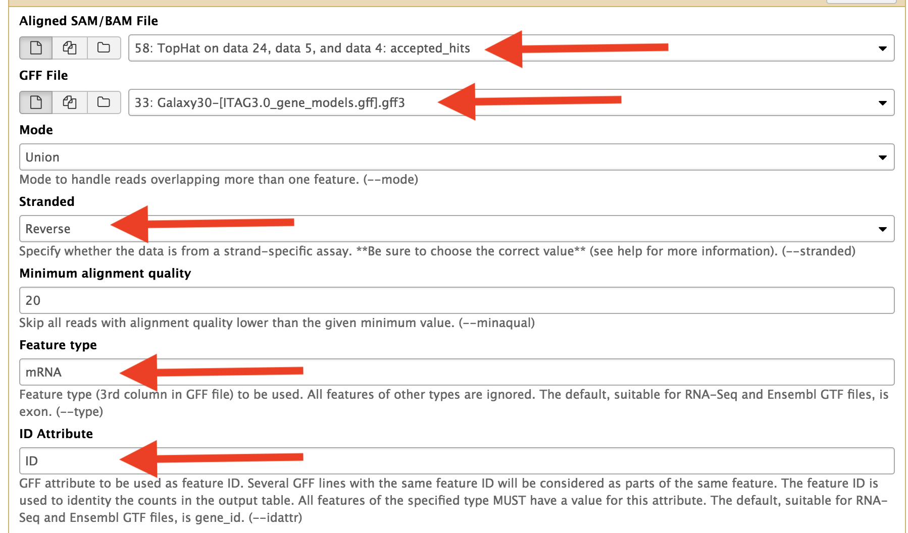

Use Htseq to counts reads mapped to features¶
Use Htseq to counts the reads aligned to exons on the genes. Change the parameters as indicated in red arrows.
Change the intron lengths for split reads as well.

Use Htseq to counts the reads aligned to exons on the genes. Change the parameters as indicated in red arrows.
Change the intron lengths for split reads as well.